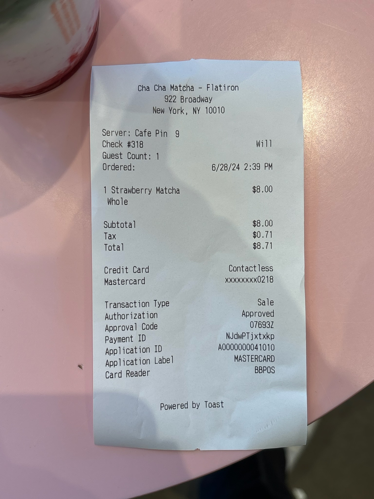
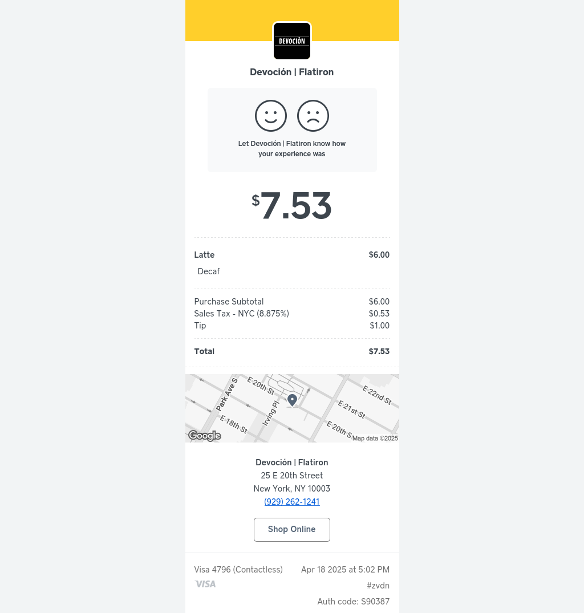
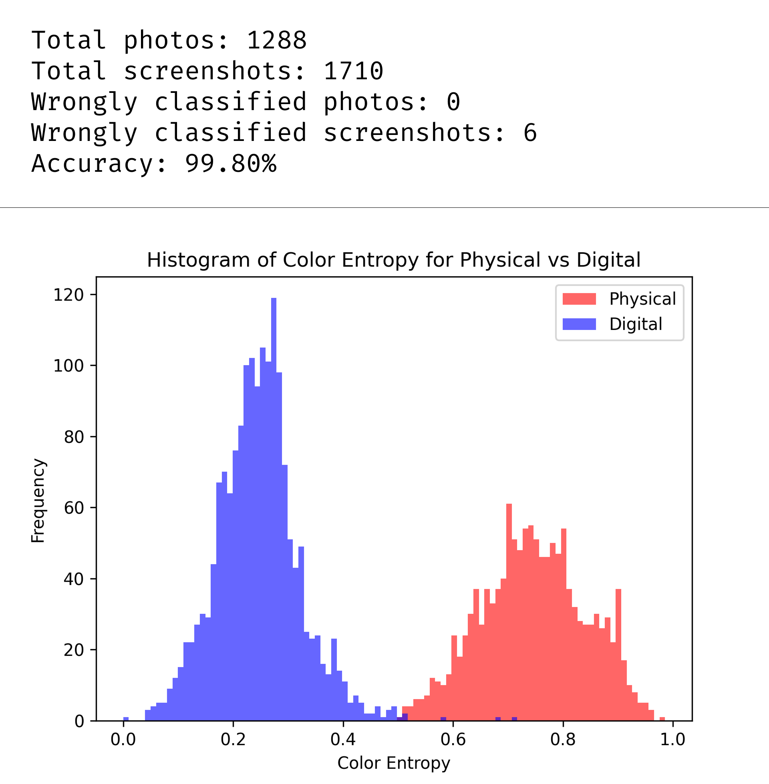

At Ramp, our customers upload two types of receipt images.
Photos:
And screenshots:
I was bestowed with the privilege of writing an algorithm that distinguishes between them.
However, there was one major limitation. I could not use any libraries other than Pillow. No OpenCV or Tesseract or classification models, just straight rawdogging it.
After a few failed approaches1, I came up with a solution that uses color entropy:
import math
from PIL import Image
from typing import Literal
def is_image_photo_or_screenshot(
img_path: str
) -> Literal["photo", "screenshot"]:
with Image.open(img_path) as img:
if img.mode != "RGB":
img = img.convert("RGB")
img.thumbnail(
(100, 100),
resample=Image.Resampling.NEAREST,
)
total_pixels = img.width * img.height
colors = img.getcolors(maxcolors=total_pixels) or []
entropy = 0.0
for count, _ in colors:
p = count / total_pixels
entropy -= p * math.log(p, 2)
# Normalize to 0.0-1.0 range
normalized_entropy = entropy / math.log(total_pixels, 2)
if normalized_entropy > 0.5:
return "photo"
return "screenshot"
The intuition behind this algorithm is simple. A photo has a large amount of unique colors. Even the blank area of a physical receipt in a photo will have dozens of slightly different whites. The opposite is true of a screenshot -- most of the pixels neatly belong to a handful of colors. This algorithm just measures the distribution of colors.
I ran a test on a small dataset of receipts I prepared:
Looking good! We only missed 6 screenshots2 out of almost 3000 images, a 99.8% overall accuracy. It's also quite speedy, due to the trick of downsizing the image to 100x100 pixels3.
This lightweight algorithm now runs on the hundreds of millions of receipts Ramp processes a year.
If this sounded interesting to you, Ramp is hiring!
-
The first approach, originally written by my coworker Yunyu, measured the percentage of the most common color, since most screenshots are set against a background with a single flat color. However, it struggled with screenshots that had compression artifacts, even after quantizing the colors. I also could not find a reasonable threshold because many screenshots do have two or more background colors. ↩
-
I can't post the wrongly-classified receipt screenshots for privacy reasons, but these had complicated graphics or even photos embedded in them. I'm willing to write these off as edge cases. ↩
-
I was concerned that aggressively downsizing the image would result in too much information loss. Initially, it did ruin the accuracy, but that was because
img.thumbnail's default resample method is "bicubic," orImage.Resampling.BICUBIC. This meant PIL would generate new colors when downsizing the image, which threw off the algorithm. Changing the method to "nearest neighbor", orImage.Resampling.NEAREST, restored the accuracy. ↩